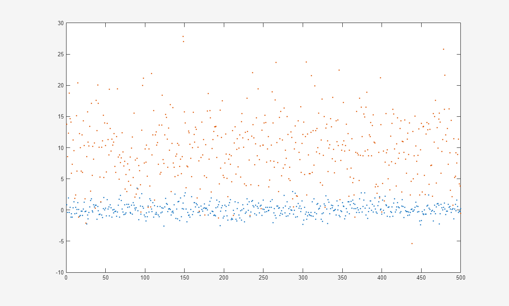
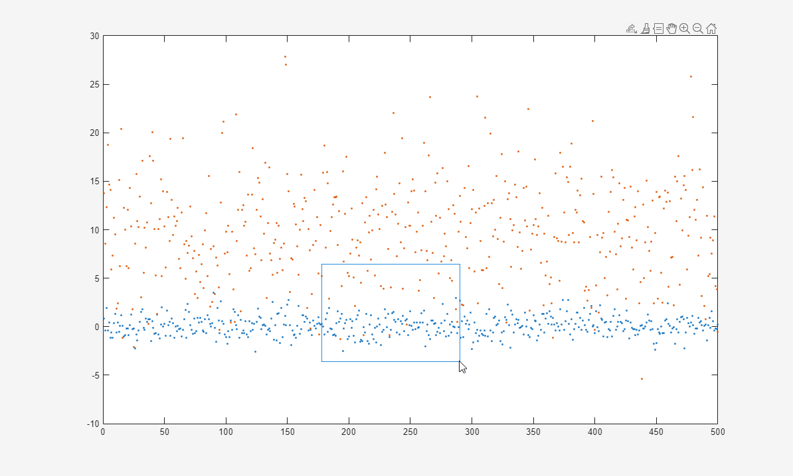
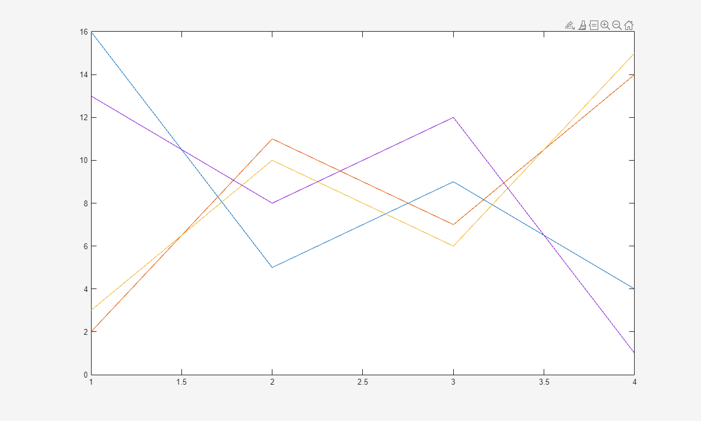
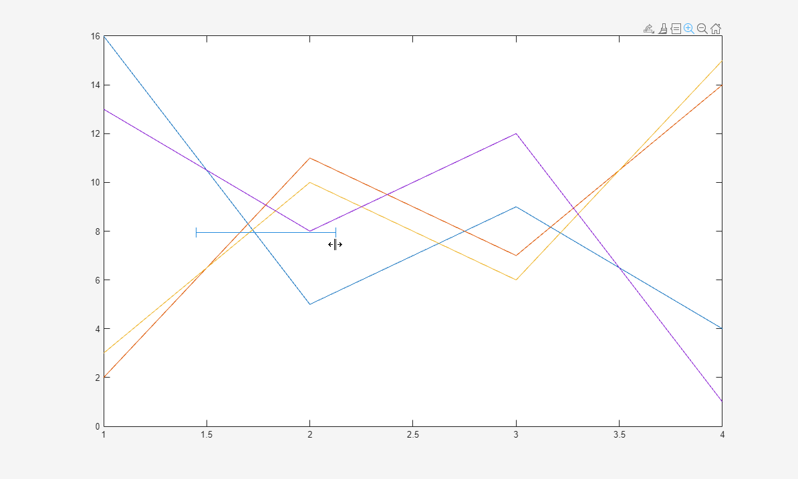
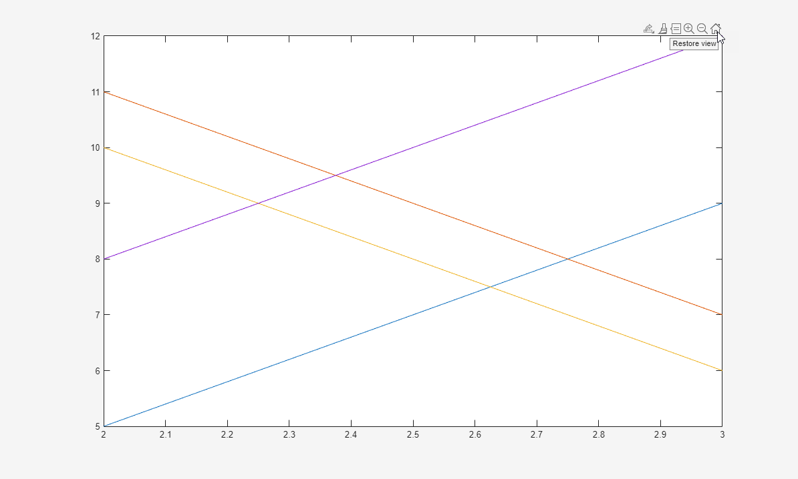

Control Chart Interactivity
You can interactively explore and edit plotted data to improve the visual display of the data or reveal additional information about the data. The interactions available depend on the contents of the axes, but typically include zooming, panning, rotating, data tips, data brushing, and restoring the original view.
Some types of interactions are available through the axes toolbar. The toolbar appears at the top-right corner of the axes when you hover over the chart area.

Other types of interactions are built into the axes and are available through gestures, such as dragging to pan or scrolling to zoom. These interactions are controlled separately from those in the axes toolbar.
When you create a chart, you can control the set of available interactions in several ways:
In R2018a and previous releases, many of the interaction options appear in the figure toolbar instead of the axes toolbar. Also, in previous releases, none of the interactions are built into the axes.
Show or Hide Axes Toolbar
To show or hide the axes toolbar, set the Visible property of
the AxesToolbar object to 'on' or
'off', respectively. For example, hide the toolbar for the
current axes:
ax = gca;
ax.Toolbar.Visible = 'off';
Customize Axes Toolbar
You can customize the options available in the axes toolbar using the axtoolbar and axtoolbarbtn functions.
For example, add a custom state button for the axes toolbar that turns on and off
the axes grid lines. First, create a program file called
mycustomstatebutton.m. Within the program file:
Plot random data.
Create a toolbar for the axes with options to zoom in, zoom out, and restore the view using the
axtoolbarfunction.Add an empty state button to the toolbar using the
axtoolbarbtnfunction. Return theToolbarStateButtonobject.Specify the icon, tool tip, and callback function for the state button by setting the
Icon,Tooltip, andValueChangedFcnproperties. This example uses the icon, which you must first save as an
image file called
icon, which you must first save as an
image file called mygridicon.pngon your path.
When you run the program file, click the icon to turn on and off the grid lines.
function mycustomstatebutton plot(rand(5)) ax = gca; tb = axtoolbar(ax,{'zoomin','zoomout','restoreview'}); btn = axtoolbarbtn(tb,'state'); btn.Icon = 'mygridicon.png'; btn.Tooltip = 'Grid Lines'; btn.ValueChangedFcn = @customcallback; function customcallback(src,event) switch src.Value case 'off' event.Axes.XGrid = 'off'; event.Axes.YGrid = 'off'; event.Axes.ZGrid = 'off'; case 'on' event.Axes.XGrid = 'on'; event.Axes.YGrid = 'on'; event.Axes.ZGrid = 'on'; end end end

Enable or Disable Built-In Interactions
To control whether a set of built-in interactions is enabled within a chart, use
the disableDefaultInteractivity and enableDefaultInteractivity functions. Sometimes MATLAB® automatically disables the built-in interactions. For example, they
might be disabled for charts that have special features, or when you implement
certain callbacks such as a WindowScrollWheelFcn callback.
Customize Built-In Interactions
Most types of axes include a default set of built-in interactions that correspond to specific gestures. The interactions that are available depend on the contents of the axes. Most Cartesian axes include interactions for scrolling to zoom, hovering or clicking to display data tips, and dragging to pan (in a 2-D view) or rotate (in a 3-D view). You can replace the default set with a new set of interactions, but you cannot access or modify any of the interactions in the default set.
To replace the default interactions, set the Interactions property of the axes to an array of interaction
objects. Choose a compatible combination of interaction objects from the following
table. To delete all interactions from the axes, set the property to an empty array
([]).
| Interaction Object | Description | Compatible Interactions |
|---|---|---|
panInteraction | Pan within a chart by dragging. | All except regionZoomInteraction and
rotateInteraction |
rulerPanInteraction | Pan an axis by dragging it. | All |
zoomInteraction | Zoom by scrolling or pinching. | All |
regionZoomInteraction | Zoom into a rectangular region by dragging.
(For 2-D Cartesian charts only) | All except panInteraction and
rotateInteraction |
rotateInteraction | Rotate a chart by dragging it. | All except panInteraction and
regionZoomInteraction |
dataTipInteraction | Display data tips by hovering, clicking, or tapping. | All |
For example, create a plot containing 1000 scattered points.
x = 1:500; y = randn(1,500); y2 = 5*randn(1,500) + 10; plot(x,y,'.',x,y2,'.')

By default, this plot has a set of interactions that includes dragging to pan
within the chart area. However, because the plot has a dense collection of points, a
more useful set of interactions might include one that allows you to zoom into
specific regions of the plot. The regionZoomInteraction object
provides this functionality. Replace the default set of interactions for the current
axes with an array that includes the regionZoomInteraction
object.
ax = gca; ax.Interactions = [zoomInteraction regionZoomInteraction rulerPanInteraction];
Now, dragging within the plot area defines a rectangular region of interest to zoom into.

Customize Interaction Behavior
You can customize the behavior of certain aspects of axes interactions. Customize
axes interactions by changing the property values of the
CartesianAxesInteractionOptions object associated with the
InteractionOptions property of the axes.
For example, customize axes interactions in a figure. Modify the supported
interactions for the axes. Specify the PanSupported property as
"off" so the axes do not support the pan
interaction.
f = figure;
ax = axes(f);
plot(ax,magic(4));
ax.InteractionOptions.PanSupported = "off";
The axes toolbar no longer includes the Pan  button, and clicking and dragging the plot does
not pan the view of the axes.
button, and clicking and dragging the plot does
not pan the view of the axes.

Then, constrain the zoom interaction to only the x-dimension.
ax.InteractionOptions.LimitsDimensions = "x";
Now, all of the zoom interactions associated with the
LimitsDimensions property are constrained to the
x-dimension. For example, enable zoom mode for the
axes.
zoom(ax,"on")
LimitsDimensions property of
CartesianAxesInteractionOptions constrains zooming to the
x-dimension.
After zooming into the axes, restore the view of the axes. Before you restore the view, query the default x-axis limits for restoring the view.
restoreX = ax.InteractionOptions.RestoredXLimits
restoreX =`
1 4
Customize the x-axis restoration limits.
ax.InteractionOptions.RestoredXLimits = [2 3];
Then, click the Restore view  button in the axes toolbar. The limits of the
x-axis are
button in the axes toolbar. The limits of the
x-axis are [2 3].

See Also
Functions
Properties
- AxesToolbar Properties | ToolbarPushButton Properties | ToolbarStateButton Properties | Axes Properties | CartesianAxesInteractionOptions Properties